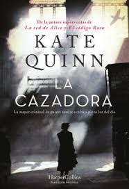

LIBRO DEL MES

La Cazadora
by Kate QuinnEl corresponsal de guerra británico Ian Graham ha abandonado el periodismo para dedicarsse a persequir criminales de guerras nazis, pero hay un objetivo que se le resiste: la Cazadora
Leer reseña completa